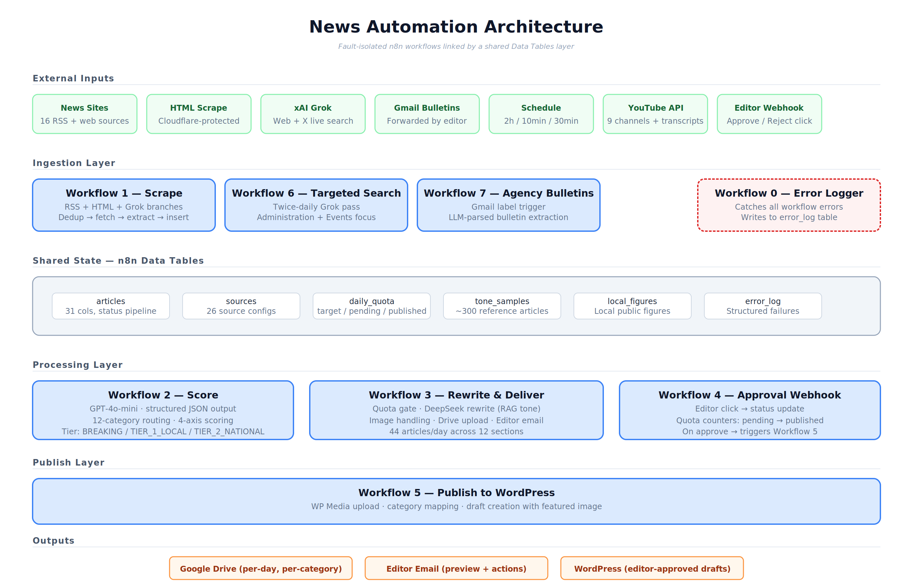

Available for freelance and remote work
I'm David Oladunjoye, an automation engineer in Lagos and Ibadan. I build production n8n workflows that monitor sources, draft content with AI, route it through human approval and publish it, including a pipeline that publishes 44 articles a day for a regional news publisher.
What I offer
Automation built to run every day, with humans in control of what goes out.
Monitor dozens of sources, flag what matters, draft articles in your house style and publish to WordPress after editor approval.
LLM pipelines for scoring, rewriting, classification and multi-agent content production, with structured outputs and safe fallbacks.
Chat assistants that answer from your own documents, built on Supabase pgvector or Pinecone depending on your scale and budget.
Lead scoring and CRM sync, document sorting, email drafting and reporting that connect your tools and remove repetitive work.
Also available for remote chat operations, audio transcription and science content.
Automation portfolio
Built with n8n and integrated with real-world APIs and AI models.
A production newsroom system that monitors RSS feeds, protected web pages, YouTube transcripts, X/web search and emailed bulletins, scores each story for relevance, rewrites it in the publisher's own voice, and sends it to an editor for one-click approval before publishing to WordPress. Daily quotas per section, duplicate detection, a breaking-news bypass, signed approval links with reminders, and a central error log keep it reliable. Result: 44 articles per day.

A multi-agent content system with three specialised AI personas (strategist, writer and reviewer), each separated by a human approval gate. Built for n8n's May 2026 community challenge. Feedback accumulates across revisions so agents never repeat rejected work, and a three-way router sends content back to any stage based on the human's decision. Approved posts are logged to Google Sheets.
Two retrieval-augmented agents built on different vector stacks: Supabase pgvector (self-managed, low storage cost) and Pinecone (managed, higher recall at scale). Built to answer questions from private documents with grounded, source-based replies.
Webhook-triggered lead qualification. Each lead is scored 1 to 10 with a High, Medium or Low band and a written reasoning trail, then routed to the right CRM stage so sales teams see why a lead was prioritised.
A Gmail-triggered workflow that classifies incoming emails by intent and drafts tone-matched replies as Gmail drafts. It never auto-sends, so a human stays in control.
A Google Drive watcher that categorises incoming files (invoice, contract, resume, report, receipt), suggests consistent file names and routes each file to the right folder, handling unknown file types gracefully.
Takes one piece of long-form content and generates platform-specific versions in parallel, such as a Twitter thread and a LinkedIn post, from a single blog post.
Toolkit
Background
I'm David Oladunjoye, an automation engineer based in Lagos and Ibadan, Nigeria. I hold a B.Sc in Microbiology and built a parallel career in AI-powered workflow automation with n8n.
My most recent work is a newsroom pipeline for a regional news publisher: it ingests dozens of sources, scores and rewrites stories, and publishes 44 articles a day after editor approval. I like building systems that stay reliable and keep a human in charge of what goes live.
I completed national service in October 2026 as a biology and digital technology teacher, which sharpened how clearly I explain technical work to non-technical people. I'm available for freelance projects and remote roles, and comfortable working across time zones.
Open to freelance projects, remote roles and long-term contracts. Reach out and I'll respond within 24 hours.